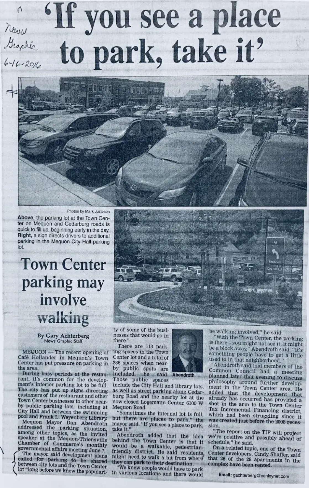
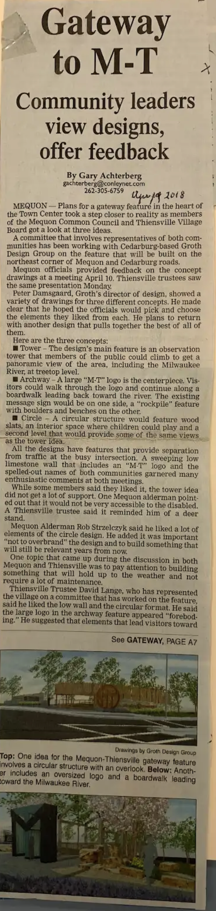

Town Center construction started in 2014. Tenants moved in in 2015. At present, all the retail and office space is rented. Many of the apartments are under lease. Ground-level tenants include… Cafe Hollander Supercuts Mitch’s Sports Cards Elements Massage A Nails Brent Tollerud, DMD Forward Dental Marathon Bank Vesta CPAs Colectivo Ruby Tap.
Ped Friendly?
WiRED intended the development to be pedestrian friendly. There were sidewalks around the outside of the development. Almost from the start, parking was a limiting factor at Town Center. Mequon expanded a municipal lot adjacent to the development.
To increase the parking capacity, in 2019, Mequon expanded the parking behind the adjacent city hall to bolster parking.
Public Spaces
Town Center moved toward the goal of creating a signature destination in central Mequon. It offers several third spaces but it has no public space.
Across Cedarburg Road from Town Center, between where Seyfert’s Pharmacy had stood and the Milwaukee River, was a parcel owned by Mequon. It could have been called, charitably, a pocket park but it had no attractive features or amenities. There were two houses between the parcel and a small park to the north.
Mequon and Theinsville commissioned Groth Design Group to develop concepts for ‘Gateway Park’ to retain green space, to welcome visitors to the area, and to establish the Mequon-Thiensville brand. The Mequon Common Council and the Thiensville Village Board looked at three design concepts in April, 2018.
The chosen concept features a curved partition that separates the park from the traffic on the adjacent roads. The road-facing side of the partition includes a logo for the two municipalities and an electronic sign accounting community events. A raised walkway follows the river.

On the park-facing side of the partition is seating, signage describing the park’s natural features, and rocks for children to scramble over.
After the two houses were razed, Gateway Park connected to the small park to the north. A boardwalk follows the west bank of the river. It was intended to connect to a large park in Thiensville. Public sentiment resisted the plan.